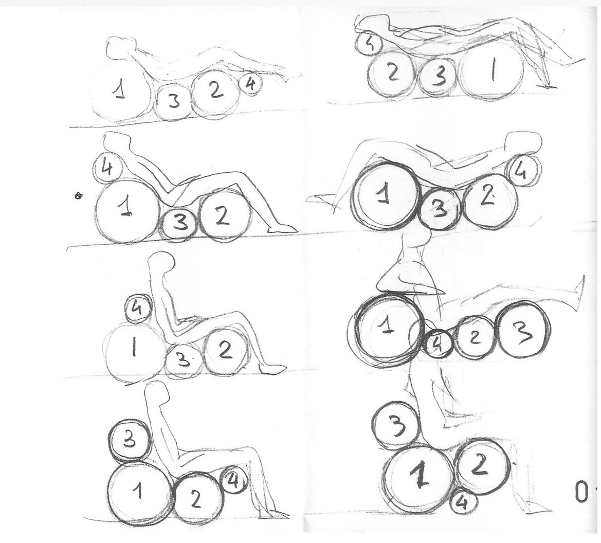
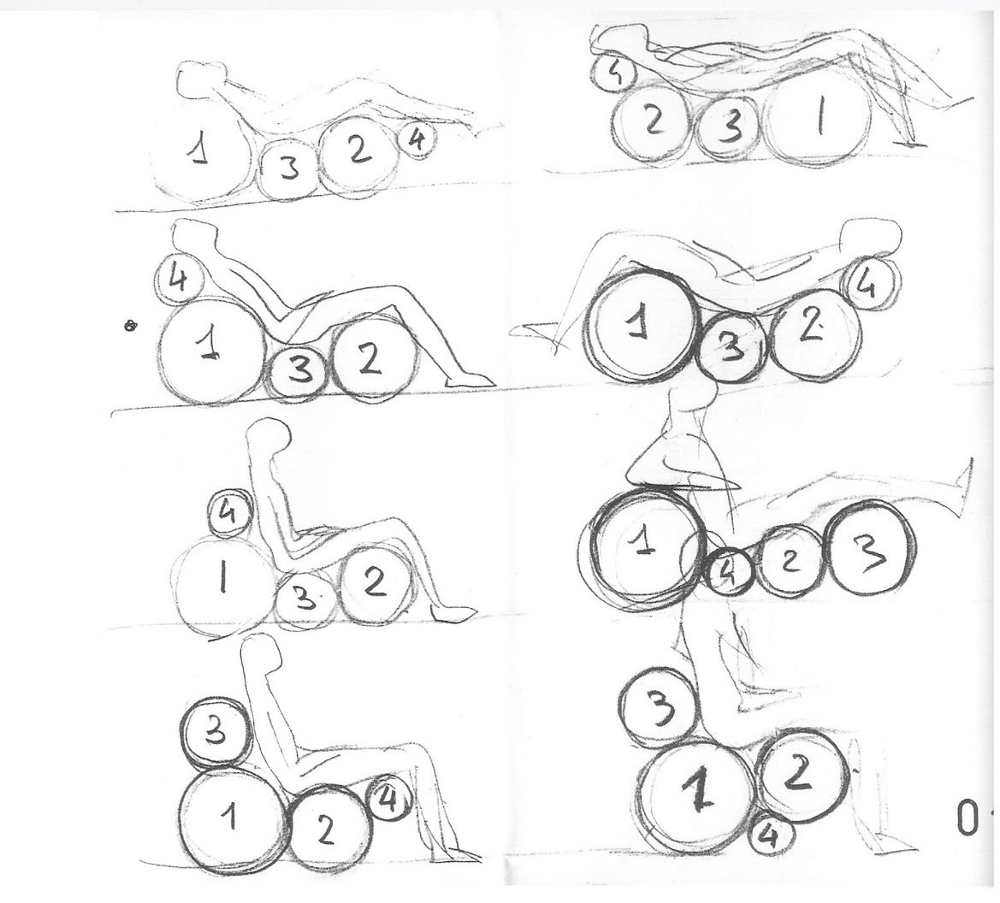

François Monnet
Fauteuil "Serpent"
Circa 1970 (Design Futuriste / Space Age)
Edition : Kappa (France) 1982
Description : Le fauteuil "Serpent" est une pièce emblématique du design Futuriste et Space Age qui a explosé au début des années 1970. Il est conçu pour rompre radicalement avec l'orthodoxie du mobilier conventionnel, embrassant une esthétique organique, fluide et dynamique. Son nom, "Serpent", fait référence à la forme sinueuse et continue de son assise et de son dossier, qui s'enroulent ou se déploient dans l'espace avec une élégance reptilienne et sculpturale.
Structure : Il est souvent réalisé en coque de résine de polyester renforcée (fibre de verre) moulée, permettant des courbes audacieuses et lisses. La coque peut être laquée dans des couleurs vives et optimistes (blanc brillant, rouge spatial, orange pop) ou, dans certaines éditions, recouverte d'un tissu texturé et extensible (laine bouclée, velours) qui épouse parfaitement la forme.
Dimensions : H. (Hauteur totale) : 79 cm, L. (Largeur) : 110 cm, P. (Profondeur) : 66 cm